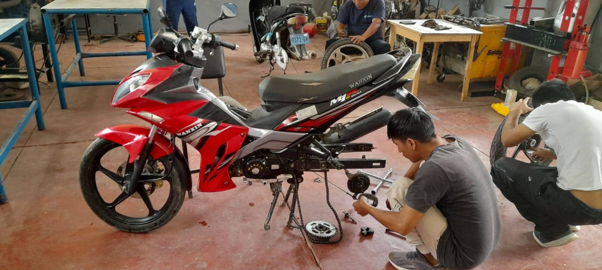
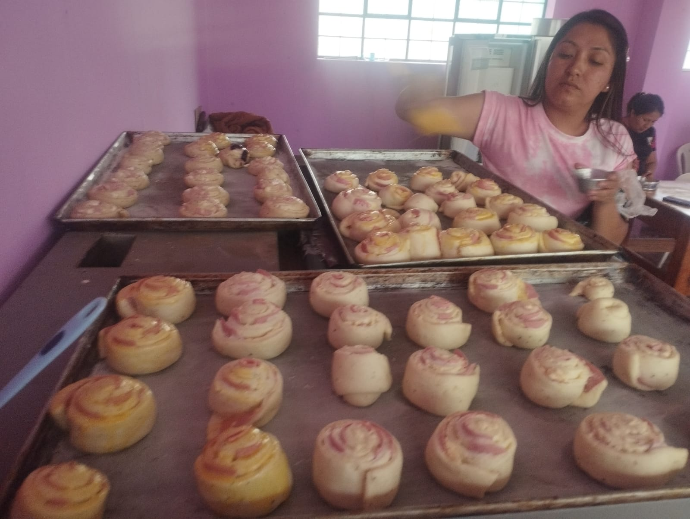
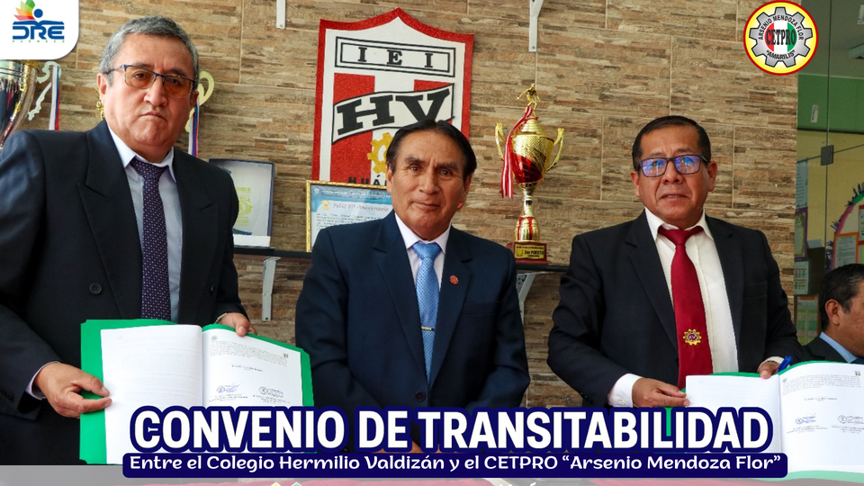
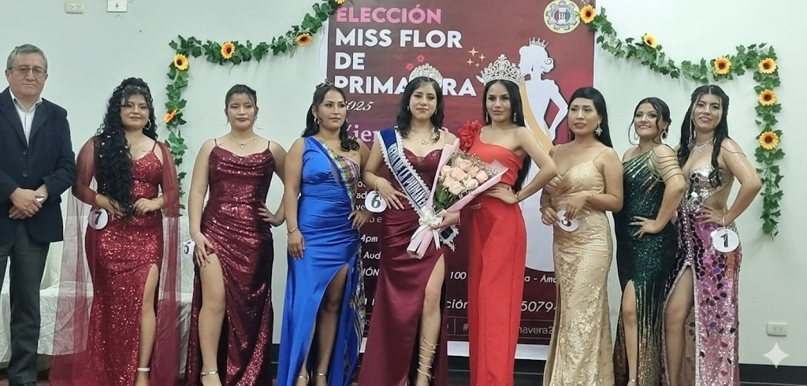
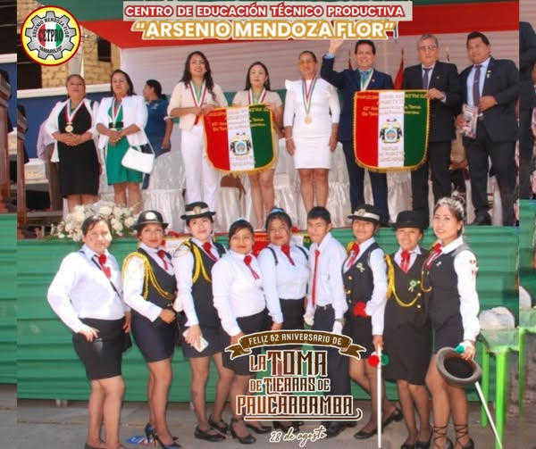

Misión
Somos una Institución Técnico Productiva de Gestión Estatal inclusiva, con personal calificado, infraestructura adecuada, tecnología moderna; promotores de una cultura preventiva ante riesgos y desastres, que formamos integralmente a los técnicos competitivos en diferentes programas de estudio, con liderazgo, autonomía y emprendimiento para insertarlos al mercado laboral.
Visión
El CETPRO “Arsenio Mendoza Flor”, al 2025 será una institución técnico productiva de ciclo técnico, licenciada y acreditada, líder a nivel nacional; identificado con la cultura, tecnología, la práctica de valores y un enfoque ambiental preventivo ante situaciones de riesgos y desastres naturales; que brinda una formación técnica de calidad, de forma presencial y virtual.
Valores
- Calidad
- Cultura emprendedora
- Creatividad
- Responsabilidad
- Puntualidad
- Inclusión
- Honestidad
- Conciencia ambiental
- Respeto
- Equidad
¿Por qué elegirnos?
Descubre las ventajas de estudiar en CETPRO Arsenio Mendoza Flor
Educación de Calidad
Docentes especializados y metodología moderna
Inserción Laboral
95% de nuestros egresados encuentra trabajo
Talleres Equipados
Infraestructura y tecnología de vanguardia
Certificación MINEDU
Títulos reconocidos oficialmente
Programas Más Solicitados
Explora nuestros programas técnicos con mayor demanda laboral



Nuestra Directiva
Un equipo comprometido con la excelencia educativa y el desarrollo integral de nuestros estudiante

Mg: Orlando Luis SILVESTRE VELASQUEZ
Director de CETPRO
Altamente experimentado, Magíster en Administración de la Educación y Especialista en Gestión Escolar con Liderazgo Pedagógico. Cuento con una sólida trayectoria que incluye 32 años como docente técnico y 12 años en dirección del CETPRO “ARSENIO MENDOZA FLOR”. Mi experiencia me posiciona como un profundo conocedor de la Educación Técnico-Productiva (ETP) en sus dimensiones pedagógica, administrativa y de gestión. Mi enfoque se centra en el liderazgo proactivo para la modernización e innovación de la oferta formativa, asegurando su pertinencia con las demandas del mercado laboral y el desarrollo productivo. Además de mi compromiso con la educación, poseo una visión empresarial práctica como empresario agroindustrial, integrando teoría y práctica para vincular estratégicamente el CETPRO con el sector productivo y fomentar la empleabilidad de los egresados.
Lic. Vilma Portal Malpartida
Coordinadora de la Sede Principal
Especialista en gestión educativa, impulsa la colaboración entre docentes y optimiza procesos para garantizar un entorno de aprendizaje dinámico y efectivo.
Téc. Marlen Blacido Céspedes
Coordinadora de la Sub Sede Panao
Docente técnica en Confección Textil y Coordinadora de la sub sede Panao. Aplica metodologías activas para potenciar las habilidades prácticas de los estudiantes, con responsabilidad y compromiso en su labor educativa.Nuestros Aliados
Trabajamos con empresas líderes para garantizar tu futuro laboral
.png)
Eventos Recientes
Mantente al día con nuestras actividades y logros

Firma del Convenio de Transitabilidad
Hemos formalizado un importante convenio para facilitar la continuidad educativa de nuestros egresados. Ahora, los estudiantes podrán convalidar sus estudios y obtener el Título de Auxiliar Técnico mediante una prueba de desempeño por demostración práctica, reconociendo así sus competencias y capacidades adquiridas. ¡Una gran oportunidad para su desarrollo profesional!

Eleccion Miss flor de primavera 2025
Celebramos con alegría la tradicional elección de nuestra Miss Flor de Primavera, un evento que resalta la belleza, el talento y la alegría de nuestra comunidad estudiantil. Una jornada llena de música, danzas y confraternidad.

🎉 Feliz 62° Aniversario de la Toma de Tierras de Paucarbamba🎉 📅 28 de agosto
Hoy recordamos con orgullo la valentía y unidad de nuestro pueblo, que con esfuerzo y coraje marcó la historia. 🌱✨ 🙏 Agradecemos de manera especial a nuestra plana docente y a los estudiantes por su destacada participación en esta significativa conmemoración. 👩🏫👨🎓👏
Visítanos
Estamos ubicados en Paucarbamba – Amarilis – Huánuco
Preguntas Frecuentes
Encuentra respuestas a las consultas más comunes
¿Cuál es el costo de los programas?
Los costos varían según el programa. Ofrecemos facilidades de pago y becas para estudiantes destacados. Contáctanos para información específica.
¿Los títulos están reconocidos por el MINEDU?
Sí, todos nuestros programas están autorizados por el Ministerio de Educación y los títulos tienen reconocimiento oficial.
¿Cuál es la duración de los programas?
La mayoría de nuestros programas tienen una duración de 6 meses (40 créditos), con modalidades presencial y semipresencial.
¿Ofrecen apoyo para conseguir trabajo?
Sí, tenemos una bolsa de trabajo y convenios con empresas de la región para facilitar la inserción laboral de nuestros egresados.
¿Listo para transformar tu futuro?
Únete a más de 2,500 egresados que han encontrado su camino profesional con nosotros